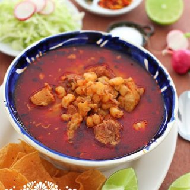

Posole

Description
This recipe is for a traditional red posole, which is a stew that originates from Mexico. This is one of my favorite
dishes that is usually made during the colder weather season, but I enjoy it year round in my house
since it is that good! Pork is traditionally used, but it can be substituted for chicken if prefered.
Ingredients
For the soup
- 4 Quarts of Water
- 2 pounds cubed pork shoulder
- 1 pound pork spare ribs or baby back ribs
- 1 white onion cut in quarts
- 8 large garlic cloves
- Salt to taste
- 3 cans white hominy, drained and rinsed
For the red sauce
- 5 guajillo peppers cleaned, seeded, open flat, and deveined
- 5 ancho peppers cleaned, seeded, open flat, and deveined
- 6 garlic cloves
- 1 medium white onion coarsely chopped
- 1/2 teaspoon dry Mexican oregano
- 2 tablespoon vegetable or canola oil
- Salt to taste
For the garnish
- 1 head of lettuce or cabbage
- 1 1/2 cups of onions finely chopped
- Ground Chile piquin to taste
- 1 1/2 cups radishes sliced
- Mexican oregano
- Tostadas
- Limes cut to wedges
- Optional: avocado chopped
Steps
- Heat water in a large stockpot. Add pork meat, spare ribs, onion, and garlic. Bring to a boil, then lower the heat and let simmer, partially covered for 2 and half hours or until meat is tender and falling off the bone. Season with salt when meat is almost done. While cooking, skim the top layer of foam and fat from the pot using a ladle. If necessary, add warm water to maintain the same level of broth in the pot.
- Remove pork from broth; reserve broth. Trim excess fat, and remove meat from bones; discard bones, onion, and garlic from the broth. Shred meat, and cover.
- Now for the sauce, soak the ancho and guajillo peppers in water just enough to cover for 25-30 minutes until soft.
- Using a blender or food processor blend peppers, garlic cloves, onion, and oregano, adding some of the water in which they were soaking. Puree mixture until smooth.
- Heat oil in a large skillet over medium-high. Add the dry pepper puree and salt to taste, stirring constantly as it splatters. Reduce heat to medium; simmer, about 25 minutes.
- Using a strainer, add the sauce to the broth. Bring to a boil and add the meat, and simmer gently, for about 10 minutes. Stir in white hominy, and season with salt and pepper. Simmer until heated through.
- Serve Pozole in large Mexican soup bowls and place garnishes on the side as shown above.
Return to home